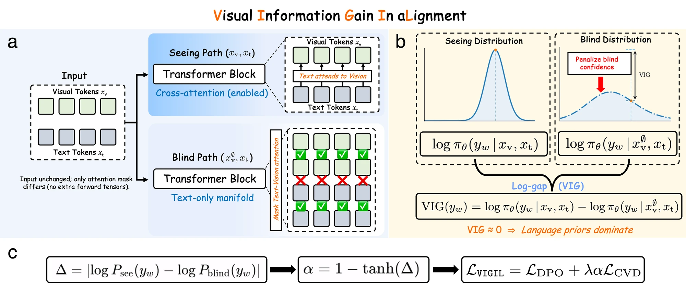
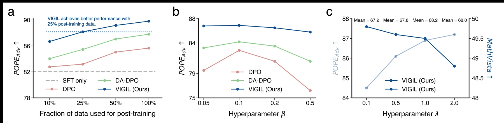
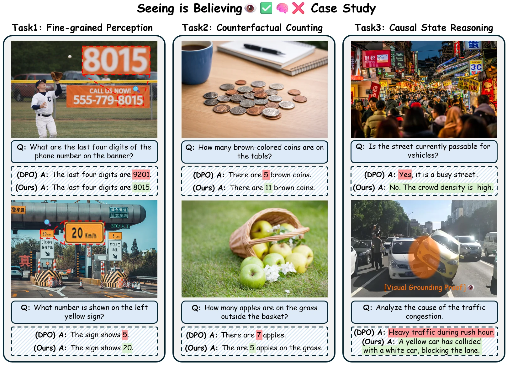

Visual laziness is a dependency failure.
Outcome-level preference losses can reward correct strings even when the model reaches them through language priors instead of visual evidence.
Counterfactual visual alignment for MLLMs
VIGIL teaches multimodal models to rely on visual evidence by contrasting what they say when they can see with what they still claim when made counterfactually blind.
Abstract
Multimodal large language models extend LLMs with visual perception, yet they remain prone to hallucinations that contradict the input image. A key failure mode is visual laziness: the model may encode useful visual evidence internally while decoding from strong language priors.
VIGIL is an offline post-training framework that aligns MLLMs by maximizing Visual Information Gain. It constructs a matched counterfactual blind state through attention masking, then penalizes cases where the preferred response stays high-confidence even without visual access. This seeing-versus-blind contrast anchors high-confidence predictions to visual evidence rather than linguistic shortcuts.
Three claims
Outcome-level preference losses can reward correct strings even when the model reaches them through language priors instead of visual evidence.
VIGIL compares the same response under seeing and blind states, making visual dependence directly observable during training.
The visual anchor improves hallucination mitigation across model scales and architectures while matching full-data baselines with only 25% of preference data.
Method
The model receives the full multimodal input and can attend from text tokens to visual tokens.
Attention masking blocks text-vision interaction while keeping input tensors matched, creating a counterfactual blind state.
The objective enlarges the log-likelihood gap between seeing and blind states and suppresses high-confidence blind responses.

Visual Information Gain
VIG(y) = log p(y | image, text) - log p(y | blind, text)
Results


Why it matters
Standard multimodal preference optimization can improve final answers while leaving visual dependence under-specified. VIGIL instead asks whether the same answer remains plausible when visual evidence is causally removed.
This turns visual grounding into a measurable training signal: high confidence is rewarded only when the model actually needs the image to sustain that confidence.
Citation
@misc{xiao2026vigil,
title = {Staying VIGILant: Mitigating Visual Laziness via Counterfactual Visual Alignment in MLLMs},
author = {Xiao, Xi and Liu, Chen and Liao, Chih-Ting and Zhang, Yunbei and Lan, Qizhen and Wei, Yuxiang and Zhao, Lin and Wang, Janet and Gu, Jianyang and Ye, Muchao and Wang, Tianyang and Xu, Hao},
year = {2026},
note = {Project page: https://xixiaouab.github.io/VIGIL/}
}